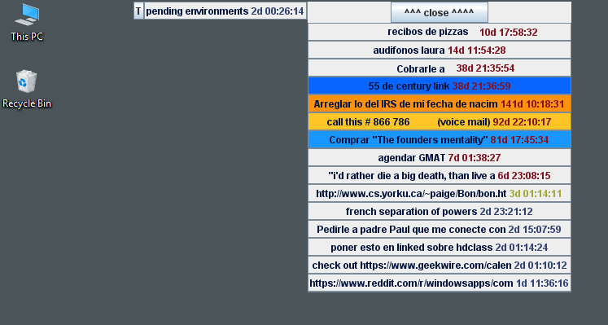
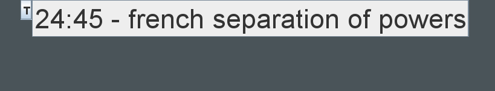

TrelloClient
Welcome to TrelloClient
TrelloClient is a tiny app that runs on your desktop to show your trello cards and list at all times.
When minimized, it will show the top card in that list meaning that this is what you are working on at this moment. It has a timer next to it that started when the card was created, so you know how much time has passed since you started to think about this task.
Actions on cards
Whe you right click on a card, you can add comments, move, copy to clipboard, open in the browser and start pomodoro timers.

Pomodoro timer
Pomodoro technique is is a time management method that uses a timer to break down work into intervals, traditionally 25 minutes in length, separated by short breaks. With TrelloClient you can start this 25 minute timer.
